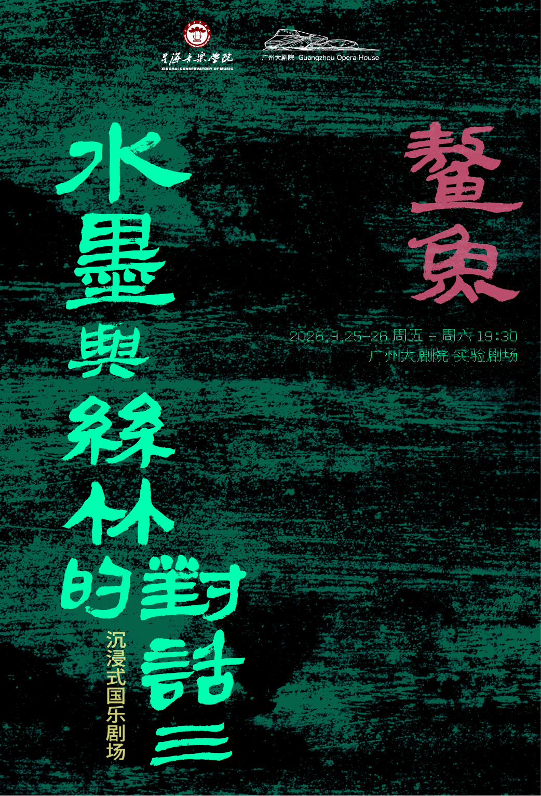

扫描
鳌鱼二维码
，在二维码上方查看
鳌鱼
首次进入请点击「允许/Allow」授权摄像头
资源准备中…
正在打开相机…
点击此处开启相机
请允许网页使用摄像头
调试
系统时间调试
×
-1h
-10m
-1m
真实
+1m
+10m
+1h
19:59:55
20:01
强制锦鲤
强制鳌鱼
跟随真实时间
速度-
速度+
转向-
转向+
范围-
范围+
摆尾-
摆尾+
鱼小一点
鱼大一点
惊吓-
惊吓+
材质：标准
碰撞盒：关
自适应：关
锚点环
恢复默认
只改页面内部的时间，不动手机系统时间